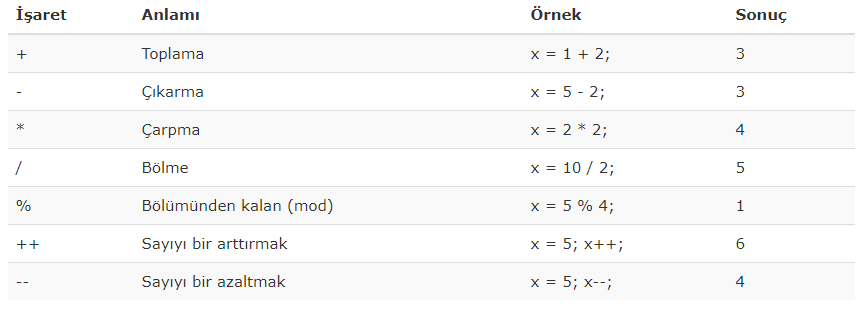

Sayısal veri içeren değişkenler arasında matematiksel işlemler yapmak için kullanmamız gereken işaretler aşağıdaki tabloda gösterilmiştir;
•Basit bir aritmetik işlem iki sayı üzerinde gerçekleşir.
•Bu iki sayı sabit tanımlanmış değer olabilir:
örneği inceleUyarı: Kodu incelemek için örneği incele dedikten sonra CTRL+U tuşuna basınız
•Veya + operatörü ile toplama işlemini önceden tanımlanmış ve değer atanmış iki değişken ile yapabilirsiniz:
örneği inceleUyarı: Kodu incelemek için örneği incele dedikten sonra CTRL+U tuşuna basınız
•Veya hem değişken hem de sabit sayıyı işleme sokabilirsiniz::
örneği inceleUyarı: Kodu incelemek için örneği incele dedikten sonra CTRL+U tuşuna basınız
Operatör önceliği, aritmetik işlemde hangi operatörün önce işletileceğini ifade eder.
örneği inceleUyarı: Kodu incelemek için örneği incele dedikten sonra CTRL+U tuşuna basınız